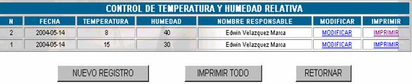
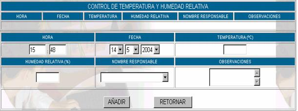

CONTROL DE TEMPERATURA Y HUMEDAD
De acuerdo con el manual de procedimientos de administración de sistemas, se establecen los siguientes estándares en los cuales se deben respetar.
La pantalla principal de esta opción se presenta a continuación:

N°;
especifica el número de control de temperatura y humedad relativa asignada por el sistema automáticamente.Fecha; especifica la fecha de control de temperatura y humedad relativa
Temperatura; especifica la temperatura registrada en la fecha y la hora correspondiente
Humedad; especifica el porcentaje de humedad relativa registrada.
Nombre del responsable; especifica el nombre de la persona que realizó el control de temperatura y humedad relativa.
Nuevo Registro; esta opción permite introducir los datos de temperatura y humedad relativa al sistema y muestra la siguiente pantalla.

Hora;
coloque la hora en la cual se está realizando el registro de temperatura y humedad relativa.Fecha;
coloque la hora en la cual se está realizado el registro de temperatura y humedad relativa.Temperatura °C;
ingrese la temperatura registrada, solamente en grados centigrados.Humedad relativa (%);
especifique el porcentaje de humedad relativa medida en ese momento.Nombre responsable;
especifique su nombre, en caso de que sea usted quien esté realizando este control.Observaciones;
si es que la temperatura o la humedad relativa excede los parámetros especificados en el manual de procedimientos de sistemas, realice las correspondientes observaciones.Modificar; esta opción permite al registrador cambiar los datos de registro en caso de equivocarse en el momento del registro, haga click sobre
MODIFICAR para realizar los cambios, no utilice esta opción para malos propósitos.Imprimir; esta opción permite obtener un reporte del registro de la tempratura y humedad relativa, completo que se puede imprimir.